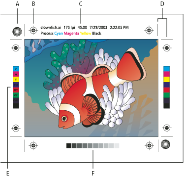

About printer’s marks
When you prepare artwork for printing, a number of marks are needed for the printer device to register the artwork elements precisely and verify correct color. You can add the following kinds of printer’s marks to your artwork:
- Trim Marks
- Fine (hairline) horizontal and vertical rules that define where the page should be trimmed. Trim marks can also help register (align) one color separation to another.
- Registration Marks
- Small targets outside the page area for aligning the different separations in a color document.
- Color Bars
- Small squares of color representing the CMYK inks and tints of gray (in 10% increments). Your service provider uses these marks to adjust ink density on the printing press.
- Page Information
-
Labels the film with the name of the file, the time and date
of printout, the line screen used, the screen angle for the separation,
and the color of each particular plate. These labels appear at the
tops of the images.

Printer’s marks
- A.
- Star target (not optional)
- B.
- Registration mark
- C.
- Page information
- D.
- Trim marks
- E.
- Color bar
- F.
- Tint bar